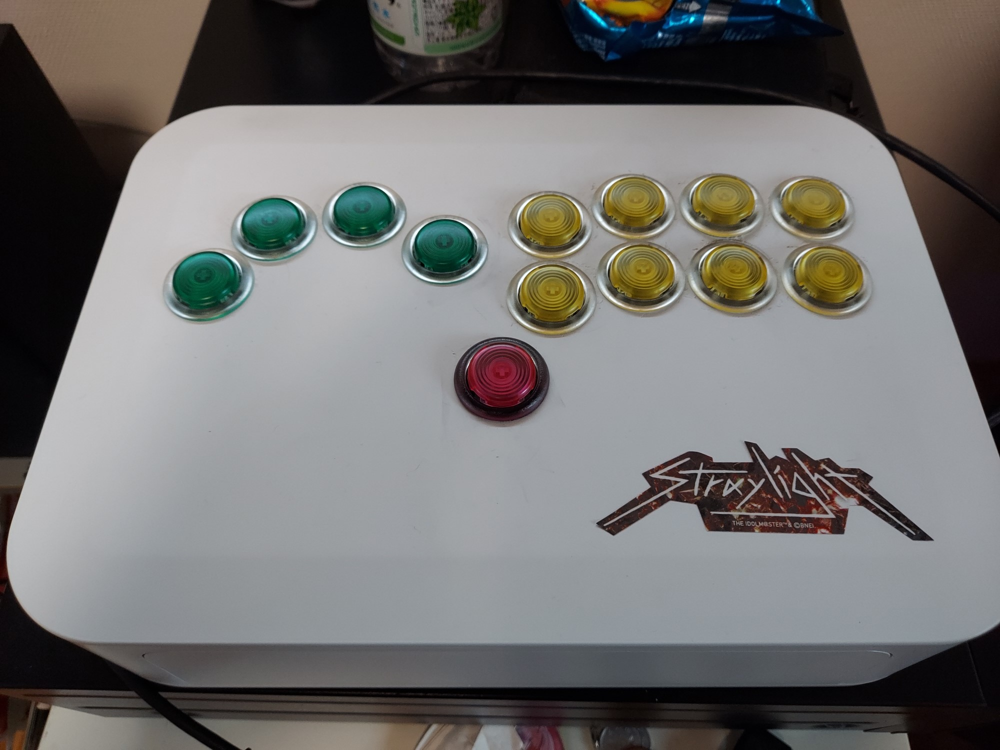

スト6を始めたので、せっかくだしアケコンでやりたい！ でも市販品は高い！ という理由でレバーレスを自作してみた。
アケコンを使っている友人から意見を聞いたり、レバーレス貸出をしているゲーセンに行って試しに触ってみたりして準備を進めた。
自作するにあたって重視した点は以下の通り。これを指標にして部品の選定や準備するものの選定を行った。
検索してみると先駆者が沢山いたため、用意するもの等の文献にはまったく困らなかった。
レバーレス自作で重要なものは以下の３つ。
タカチ電機工業のネットワークケースを使用した。 以下リンク内の型番PF28-7-20Wのもの。
ネットワークケース PFシリーズ | 製品情報 | タカチ電機工業 - 産業用・工業用のケース・ボックス・ラック・筐体の製造メーカー
コントローラを作るに当たって様々なガワを検討したところ、見た目や値段等を考えてこれに行き着いた。本来はIoT機器やハブ等のために使われるものらしいため、容易にネジを使って中身の開閉が可能。表面がすこしざらざらしているため手が滑りにくい点も良い。あと安い。
また、樹脂素材であるため加工しやすい。木工用のホールソーで穴を開けたが、全く問題なく使用できた。
主流なものはBrookのUFBやAFBだが、通常の値段も1万円くらいするらしく、私が購入した際にはさらに高騰していたため、安さを重要視して今回はラズパイpicoを使用した PFB(Pico Fighting Board) を使用した。ファームウェアはGP2040-ceである。
私はPCでの使用のみを目的としていたためPFBを選んだが、PSシリーズで使う場合は絶対にUFBやAFBを選ぶべきだと思う。PFBだとPS4上でレガシーコントローラとなり、一部のゲームで使えなかったり大会に出場ができない場合があるからだ。しかし、基板は換装できるため、私は「大会に出るくらい上手になったらUFBに換装してもいいな～」とか思ってPFBにした。
わざわざPFBを選ぶ理由もあり、PFBはUFBやAFBよりラグが無いらしいが……その点はあまり気にしなかった。
元々持っていたラズパイピコをそのまま使えるだろうと踏んでいたが、ガワの内部等を確認したところブレッドボードが入らず、さらにPico Fighting Board専用プリント基板が品切れ中でかつファームウェアのセットアップが面倒だったためであり、BOOTHで販売されている基板を購入した。
Pico Fighting Board typeC - たこた工房 - BOOTH
現在はこちらが品切れであり、プリント基板のほうは入荷がなされている。
男は黙ってはめこみ式
三和静音ボタンにしようとしたが、品切れ中でかつちょっと高かった。そのため、PUNK WORK SHOPの新型ボタンを海外から取り寄せることにした。
Standard button - PUNK WORK SHOP
何と言っても高い静音性が担保されているため、静音性を重視している私にとってはちょうどよかった。押し心地の不安があったが、実際に届いて確認したところ違和感なく、むしろ心地良かった。
サイズはΦ24mm。ジャンプボタンにΦ30mmを採用しているものもあったが、一つのボタンのためにわざわざ違うサイズのホールソーを買う余裕はなかった。カラーの種類も豊富でとても迷い、結果的に配色にはちょっと後悔したため、慎重に選ぶことをお勧めする。
これは基板と各種攻撃ボタンをつなぐケーブル。差込口がセットされているためそのまま基板とボタンをつなぐことができる。
Amazon.co.jp: BROOK ジョイスティック用ハーネス ケーブル 4pinL3/R3ボタン用のハーネス 【公式正規品】 : パソコン・周辺機器
レバーレスの場合は上下左右もボタンのため、こっちもいる。
Amazon.co.jp: BROOK Hitbox専用 5pinボタン用ハーネス ケーブル【公式正規品】 : パソコン・周辺機器
ボタンをはめこむ穴を開けるためにホールソーが必要なため購入した。
Amazon.co.jp: TRUSCO(トラスコ) 六角軸TCLホールカッター 24mm TCL-24 : 産業・研究開発用品
バネ付きのものを選ぶべきだという記事を見たため、それを購入した。バネのお陰で穴あけの際にかなり楽に加工できた。
また、もちろんホールソーを使うための電動ドライバーも用意する必要がある。私の自宅には電動ドライバーがあるため問題なかったが、ない場合はホームセンター等で借りることができるらしい。
購入当時の価格で、ホールソーも合計して21114円。
円安等もあってボタンが割高だった(1つ2.5ドル)。それでも日本で買うより安い……。 基板も自分でラズパイpicoのセットアップやはんだ付け等をすればもっと安くなると思う。
自作したからと言ってめちゃ安くなるわけではないが、市販品に比べるとこれでもかなり安い方。 自作アケコンはそんなに安くない。
そもそも市販品が平均5万とか平気でする方がおかしい。もう詐欺では？
ボタン配置にはさまざまな種類があるが、ビュウリックス(VLX)配置にした。弱P弱Kのボタンが下がって配置してあり、それ以外はほぼ横一列の配置である。 キーボード操作に近づけるためである。
ほかにもノアール配置があり、こちらは指の長さを考慮した山なりの配置になっている。
穴あけのためにガワにたくさんΦ24mmの円を書いた。その際、移動ボタンの左に小指用のボタンのための穴も書いた。これでこのコントローラでも小指インパクトができる。
まず下穴を開ける。
円を書く際に、中心点も書いていたため、それを参考に下穴を開けていく。この穴を軸にホールソーを当てて穴を開けていく。
ホールソーには回転の向きがあるので注意が必要。基本的に時計回り。
また、ガワが樹脂素材のため、穴あけの際にかなりのバリが生じた。 このバリはしばらくすると固まって取れにくくなるため、やすりですぐ取った。
ガワが壊れない程度にそこそこ強い力を込めたが、穴あけの精度は予想外に高かった。素人でも穴あけの精度は心配しなくて良さそう。
忘れてはいけないのは側面にコードを出す穴を開けること。これがないとコードを通すことができない。
開けた穴にボタンをはめ込んでいく。ここまでくるとアケコンらしくなってくる。
裏側はこんな感じ。
配線は以下のサイトを参考にした。
Akecon Original ハーネス配線方法 – Akecon-アケ魂-
箱を閉じてシール貼って完成！
とりあえず仮完成、基盤が未固定なので明日固定具を買う pic.twitter.com/5QHneQQdHA
— ハヤブサ (@Hayabusa1601) March 3, 2024
本当に忘れていた。ボタンは予備を買っていたのでまた穴あけをすることになりそう。PC操作なので一部をキーボードで行えるので現状あまり問題はないが、いちいちキーボードに手を伸ばすのは面倒なので時間のあるときにやる予定。
それとボタンのカラーリング。特に理由もなく緑・赤・黄にしたが、もともとストレイライトのシールを貼ろうと思っていたため、緑・赤・紫にすればよかった。シール貼った後に後悔した。色ラインナップにも紫あったのに……。
円安がやばかったり兼用アケコンにしようとして挫折等いろいろあったが、結果的に完成して満足。
ガワと基板とボタンどれかが壊れてもそこだけ換装すればいいので、故障にも強い。さらに小指インパクトに対応してるのでインパクトが返しやすい！
それと音ゲーにも使えた。試しにDJMAXで使ってみたがかなり良い！ 試してはいないがデレステPC版とかでも使えそう。
穴あけは本当に面倒だったが、それ以外は想像以上に簡単だったため、二台目以降も機会があれば作ってみたい。